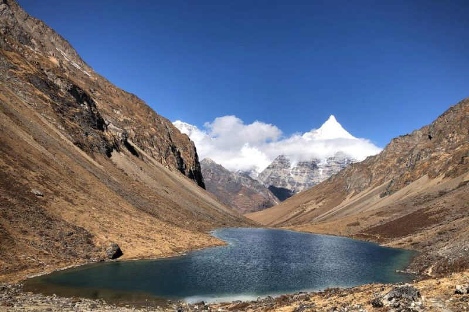

✦ STORIES FROM THE HIGHLANDS
Media Library
Films, photo essays, and ethnographic vignettes from the highlands of Bhutan.
Film
A Celebration of High-Altitude Heritage
of Laya
The Royal Highland Festival in Laya is a vibrant celebration of Bhutan's high-altitude communities and their resilient way of life. By showcasing prized yaks and local craftsmanship, the festival honors the deep bond between the people and their environment, preserving a unique cultural identity for future generations.
Watch Film →
Photo Essay
Sacred Rituals
of the Highlands
Against the backdrop of high-altitude peaks, the festival serves as a vibrant display of devotion and artistry. The dancers in the image perform intricate movements that symbolize the subduing of negative energies and the celebration of faith.
View Essay →
Vignette
Tshonapata
Treasure Lake
A short ethnographic vignette on the sacred lake of Tshonapata — its cosmological significance, the oral histories surrounding it, and the communities who protect it.
Read Vignette →